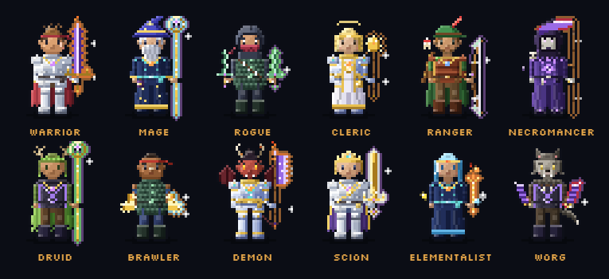

Lanterns of the Undervault
Un jeu d'exploration de donjon en texte, dans l'esprit des vieux MUD, avec des héros en pixel art. Créé par A-Theme.
Jouer dans votre navigateurEmberfall a été bâtie sur un couvercle. Il y a trois cents ans, l'Ordre de la Lanterne a enchaîné quelque chose sous la cité, et cinq Pierres de garde tiennent le sceau. Cette nuit, la Dernière Lanterne est devenue bleue. Vous avez répondu.
Chaque salle est écrite en prose. Chaque commande est un mot que vous tapez ou un bouton que vous touchez. Et chaque épée, bâton et armure que vous trouvez apparaît sur votre héros en pixel art.
Ce qu'il contient
- Douze classes : Warrior, Mage, Rogue, Cleric, Ranger, Necromancer, Druid, Brawler, Demon, Scion, Elementalist et Worg, chacune avec ses compétences, ses talents et ses titres.
- Une histoire en huit livres. Quatre sont là : quatre-vingts étages, vingt boss d'histoire, et chaque livre se termine par un choix. Les Livres V à VIII arrivent, à commencer par Le Royaume silencieux, et ils viennent avec le jeu complet.
- Un butin qui se voit : armes et armures changent l'apparence de votre héros, avec des légendaires, des sets de classe et des enchantements.
- Des donjons annexes à quatre paliers de difficulté, un Abîme sans fin avec un classement, et un donjon du jour.
- Des amis : parlez dans la Salle commune (un salon de discussion pour tous ceux qui sont en ligne, où la dernière journée reste visible), faites la course sur la même graine, jouez ensemble en direct, ou formez un groupe de quatre pour les raids. Personne de libre ? Les fantômes de votre lignée occupent les places vides.
- Un héritage qui survit à vos héros : des héritages de famille qui grandissent avec celui qui les porte, une crypte familiale qui se souvient de chaque héros Hardcore tombé, et la Salle des Échos de chaque gardien que vous avez vaincu.
- 27 familiers à apprivoiser, un mode Hardcore, la prise en charge des manettes, et ça se joue hors ligne.
- Sons de combat mixés à partir de sons libres (CC0) de Kenney, artisticdude et rubberduck ; les sorts, à partir d'enregistrements CC0 de lentikula (Basic Spell Impacts) et Julien Matthey.



Prix
- Vous achetez le jeu complet dans le jeu : ouvrez le menu et choisissez Obtenir le jeu complet. Le paiement est géré par Stripe (vous le verrez sous le nom Link), le vendeur officiel, qui gère aussi les taxes et les reçus. Cartes, Apple Pay et Google Pay fonctionnent.
- Dans l'appli Android, vous pouvez aussi acheter un déblocage réservé à Android via Google Play, au prix affiché là-bas.
- Des histoires au-delà des sept portes pourront être vendues plus tard comme extensions séparées. Tout ce qui est déjà acheté reste à vous.
- La boutique ouvre le mardi 24 novembre 2026, à 18 h, heure de Toronto. D'ici là, tous les livres sont gratuits, et chaque compte créé avant cette date, et chaque héros présent sur son appareil avant cette date, garde les Livres I à IV pour de bon. Connectez-vous avant pour être Fondateur sur tous vos appareils.La boutique a ouvert le 24 novembre 2026. Les comptes créés avant cette date, et les héros qui étaient sur leur appareil avant cette date, sont Fondateurs et gardent les Livres I à IV pour de bon.
Remboursements : dans les 14 jours suivant l'achat, pour n'importe quelle raison. Voir la politique de remboursement.
Où jouer
Le jeu complet tourne sur tous ces appareils. Connectez-vous (Google ou Discord) et vos héros et votre achat vous suivent de l'un à l'autre.
- PC, Mac, Linux ou Chromebook : ouvrez playundervault.com dans n'importe quel navigateur. Pour l'installer comme une appli, utilisez Chrome ou Edge et cliquez sur l'icône d'installation dans la barre d'adresse. Les manettes fonctionnent.
- Steam Deck : appuyez sur le bouton Steam, puis Alimentation, Passer au bureau. Ouvrez le menu des applis en bas à gauche, puis Système, Konsole, et collez
curl -fsSL https://playundervault.com/steamdeck.sh | bash(Steam + X fait apparaître le clavier). Quand il affiche Done, double-cliquez sur Retour au mode Jeu : le jeu est dans votre Bibliothèque, sous Non-Steam. - iPhone et iPad : ouvrez playundervault.com dans Safari, touchez Partager, puis Sur l'écran d'accueil. Il tourne en plein écran et hors ligne, comme une appli.
- Android : ouvrez playundervault.com dans Chrome, touchez le menu (⋮), puis Installer l'appli. Ou procurez-vous le jeu sur Google Play, ou téléchargez undervault.apk.
Contact
Questions, problèmes d'achat ou signalements de bugs : support@playundervault.com. Nous répondons généralement sous deux jours ouvrés.